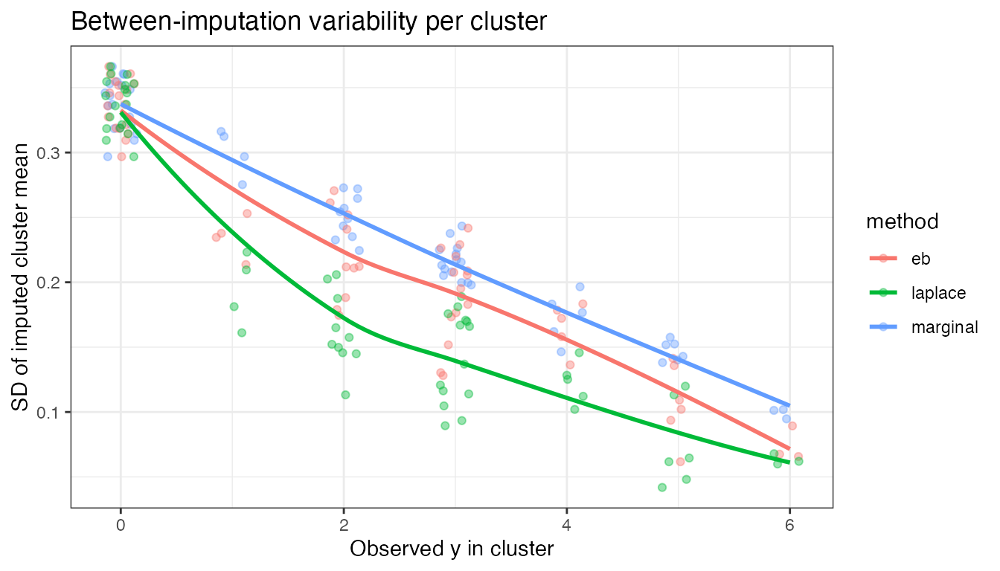
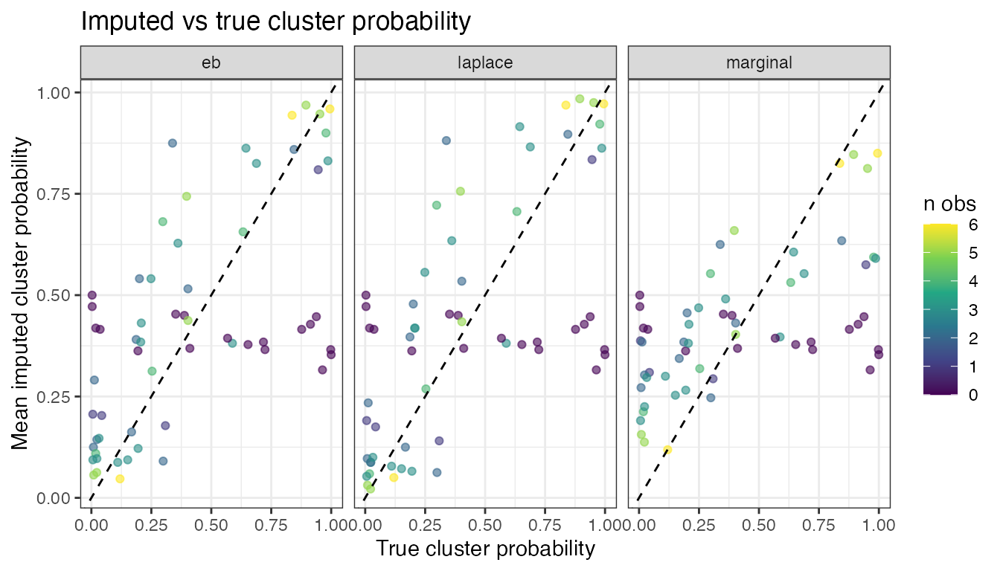

Random effects strategies in `mice.impute.2l.bin`
Stef van Buuren
2026-06-01
Source:vignettes/random-effects-2l-bin.Rmd
random-effects-2l-bin.RmdBackground
mice.impute.2l.bin() imputes a binary outcome in a
two-level (clustered) data structure using a logistic mixed model fitted
by lme4::glmer(). A key modelling choice is how the
cluster-specific random effect
is drawn for clusters that contain missing values.
Audigier et al. (2018, p. 163) describe two situations for the FCS-GLM imputer:
Systematic missingness: cluster has no observed values of . Nothing is known about from the data, so the only coherent draw is from the marginal prior .
Sporadic missingness: cluster has some observed values of . These observations are informative about , so the draw should come from the posterior .
mice.impute.2l.bin() exposes three strategies via the
random.effects argument.
The three strategies
"marginal" — original behaviour
All missing clusters, sporadic or systematic, draw from the marginal prior. This ignores the observed responses within a partially observed cluster.
Pro: Simple; correct for systematic missingness. Con: For sporadic clusters, ignores information in , leading to overdispersed imputations.
"eb" — Empirical Bayes
The draw is centred on the BLUP
from lme4::ranef(), but still spread with the full marginal
variance
.
Pro: Uses the observed data to locate ; easy to implement. Con: Does not account for the uncertainty in . Clusters with few observations get the same spread as clusters with many observations, underestimating uncertainty for small clusters and overestimating it for large ones.
"laplace" — Laplace approximation (default)
where
is the BLUP and
is the Laplace-approximated posterior variance returned by
lme4::ranef(fit, condVar = TRUE).
As , and , recovering the marginal draw. As , and , concentrating the draw around the BLUP.
Pro: Posterior uncertainty in is correctly reflected; bridges sporadic and systematic cases continuously; consistent with the recommendation of Audigier et al. (2018). Con: Relies on the Laplace approximation, which can be inaccurate for very sparse binary data (few events per cluster).
Simulation
We simulate a two-level dataset with known parameters to make the differences between strategies visible. Strong random effects () and a mix of sporadic and systematic missingness create conditions where the three methods behave differently.
library(mice)
library(ggplot2)
set.seed(42)
# simulate data
n_clusters <- 60
n_per_cluster <- 8
sigma_b <- 3
beta0 <- -0.5
beta1 <- 1.0
cluster <- rep(seq_len(n_clusters), each = n_per_cluster)
x1 <- rnorm(n_clusters * n_per_cluster)
b_true <- rnorm(n_clusters, 0, sigma_b)
logit <- beta0 + beta1 * x1 + b_true[cluster]
y <- rbinom(length(logit), 1, plogis(logit))
dat <- data.frame(cluster = cluster, x1 = x1, y = y)
# systematic missingness: 30% of clusters have all y missing
sys_cl <- sample(seq_len(n_clusters), 18)
dat$y_miss <- dat$y
dat$y_miss[dat$cluster %in% sys_cl] <- NA
# sporadic missingness: 60% of remaining observations missing
spor_idx <- which(!is.na(dat$y_miss))
dat$y_miss[sample(spor_idx, round(0.6 * length(spor_idx)))] <- NA
n_obs_per_cluster <- tapply(!is.na(dat$y_miss), dat$cluster, sum)
cat(sprintf(
"Clusters: %d total, %d systematic (all missing), %d sporadic\n",
n_clusters, length(sys_cl), n_clusters - length(sys_cl)
))
#> Clusters: 60 total, 18 systematic (all missing), 42 sporadic
cat(sprintf(
"Observed y per sporadic cluster: median %g, range %g-%g\n",
median(n_obs_per_cluster[n_obs_per_cluster > 0]),
min(n_obs_per_cluster[n_obs_per_cluster > 0]),
max(n_obs_per_cluster[n_obs_per_cluster > 0])
))
#> Observed y per sporadic cluster: median 3, range 1-6
cat("True proportion:", round(mean(y), 3), "\n")
#> True proportion: 0.404
pred <- make.predictorMatrix(dat[, c("cluster", "x1", "y_miss")])
pred["y_miss", "cluster"] <- -2
pred["y_miss", "x1"] <- 1
pred[c("cluster", "x1"), ] <- 0
m <- 40
maxit <- 2
run_imp <- function(re) suppressWarnings(
mice(dat[, c("cluster", "x1", "y_miss")],
method = c("", "", "2l.bin"),
pred = pred, m = m, maxit = maxit,
print = FALSE, seed = 1, random.effects = re)
)
imp_marginal <- run_imp("marginal")
imp_eb <- run_imp("eb")
imp_laplace <- run_imp("laplace")Between-imputation variability per cluster
The key difference between methods appears at the cluster level: how much do the imputed cluster means vary across the imputations?
get_cluster_sd <- function(imp, label) {
vals <- sapply(seq_len(imp$m), function(i) {
tapply(complete(imp, i)$y_miss, complete(imp, i)$cluster, mean)
})
data.frame(
method = label,
n_obs = as.numeric(n_obs_per_cluster),
cluster_sd = apply(vals, 1, sd)
)
}
csds <- rbind(
get_cluster_sd(imp_marginal, "marginal"),
get_cluster_sd(imp_eb, "eb"),
get_cluster_sd(imp_laplace, "laplace")
)
ggplot(csds, aes(x = n_obs, y = cluster_sd, colour = method)) +
geom_jitter(alpha = 0.4, width = 0.15) +
geom_smooth(se = FALSE, method = "loess", span = 1.2) +
labs(x = "Observed y in cluster", y = "SD of imputed cluster mean",
title = "Between-imputation variability per cluster") +
theme_bw()
#> `geom_smooth()` using formula = 'y ~ x'
For clusters with zero observed (systematic, ), all three methods draw from the marginal prior and are identical. As increases:
-
"marginal"stays high — it ignores the observed data within the cluster and always draws from the prior. -
"eb"drops — it centres on the BLUP, but uses the full prior width, so variability stays moderate. -
"laplace"drops fastest — it uses both the BLUP and the tighter posterior variance, giving the most precise draws for well-observed clusters.
Cluster-level bias
true_cluster_p <- tapply(plogis(logit), cluster, mean)
get_bias <- function(imp, label) {
mean_imp <- rowMeans(sapply(seq_len(imp$m), function(i) {
tapply(complete(imp, i)$y_miss, complete(imp, i)$cluster, mean)
}))
data.frame(
method = label,
true_p = true_cluster_p,
imp_mean = mean_imp,
n_obs = as.numeric(n_obs_per_cluster)
)
}
bias <- rbind(
get_bias(imp_marginal, "marginal"),
get_bias(imp_eb, "eb"),
get_bias(imp_laplace, "laplace")
)
ggplot(bias, aes(x = true_p, y = imp_mean, colour = n_obs)) +
geom_point(alpha = 0.6) +
geom_abline(slope = 1, intercept = 0, linetype = "dashed") +
facet_wrap(~method) +
scale_colour_viridis_c(name = "n obs") +
labs(x = "True cluster probability", y = "Mean imputed cluster probability",
title = "Imputed vs true cluster probability") +
theme_bw()
"laplace" and "eb" track the true cluster
probabilities more closely than "marginal", particularly
for extreme clusters (high or low true probability).
"marginal" shows shrinkage toward the population mean
because it ignores the cluster’s own observed data.
Recommendation
Use random.effects = "laplace" (the default) for most
applications. It is the only method that correctly handles the full
spectrum from sporadic to systematic missingness within a single
coherent framework.
Use random.effects = "marginal" only if all missing
clusters are known to be systematically missing (no observed
in the cluster at all).
Use random.effects = "eb" as a fast approximation when
clusters are large (many observations per cluster), so that posterior
uncertainty in
is small relative to
.
References
Audigier, V., White, I. R., Jolani, S., Debray, T. P. A., Quartagno, M., Carpenter, J., van Buuren, S., & Resche-Rigon, M. (2018). Multiple imputation for multilevel data with continuous and binary variables. Statistical Science, 33(2), 160–183. https://doi.org/10.1214/18-STS646